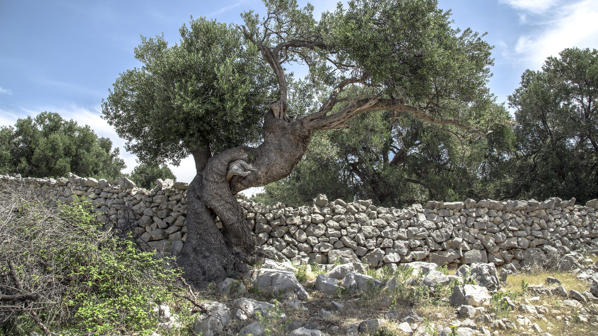
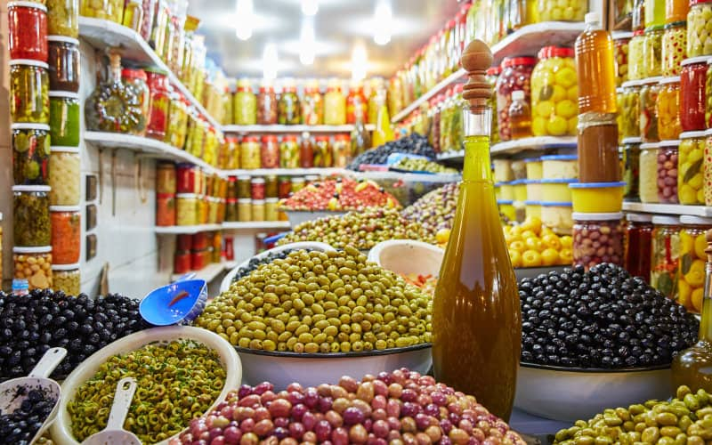
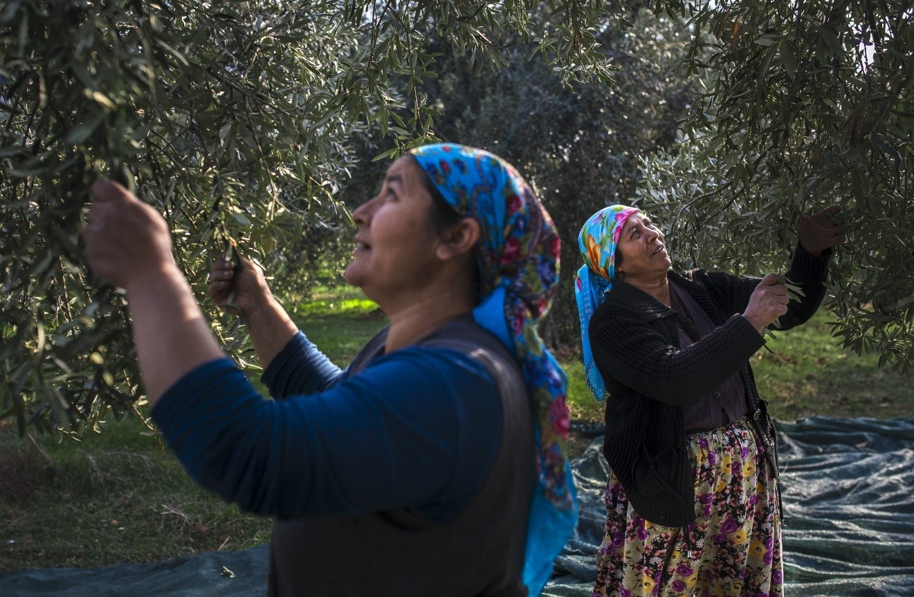

La culture de l'olivier au Maroc a une histoire riche et remonte à plusieurs siècles.
L'olivier
est une
partie importante du paysage agricole marocain, principalement cultivé dans les régions du nord, du
centre
et du sud du pays. Voici quelques points clés sur la culture de l'olivier au Maroc :
Histoire ancienne :
L'olivier est cultivé au Maroc depuis l'Antiquité. Les Romains ont
introduit la culture
de l'olivier dans la région, et depuis lors, elle est devenue une composante essentielle de
l'agriculture
marocaine.

Régions de culture :
Les principales régions productrices d'olives au Maroc comprennent le
Rif, les
montagnes de l'Atlas et la région de l'Anti-Atlas. Ces zones offrent des conditions climatiques
favorables à la croissance des oliviers.
Variétés d'olives :
Le Maroc abrite différentes variétés d'olives, chacune ayant ses
caractéristiques distinctives en termes de taille, de couleur et de saveur. Parmi les variétés
courantes, on trouve la Picholine marocaine, la Dahbia, et la Haouzia.


Production d'huile d'olive :
L'huile d'olive est un produit important de l'industrie
oléicole
marocaine. Les olives sont pressées pour produire une huile de qualité, souvent utilisée dans la
cuisine marocaine traditionnelle.
Traditions culturelles :
La culture de l'olivier est étroitement liée aux traditions
culturelles et
aux festivités au Maroc. La récolte des olives est souvent un événement communautaire, réunissant
les familles et les voisins pour participer à la cueillette.

Commerce international :
Le Maroc exporte également ses produits oléicoles, y compris
l'huile
d'olive, sur les marchés internationaux. La qualité des olives marocaines a contribué à renforcer la
réputation du pays en tant que producteur d'huile d'olive de qualité.